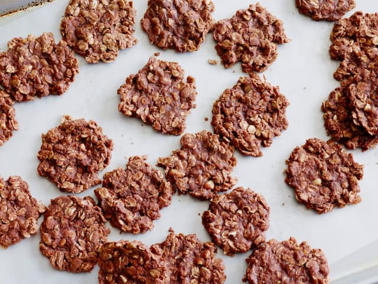

Cow Pile (poop) Cookies

Description
Unlike real cow piles, thie is recipe is no bake! These delicions cookies resemle what cow's turn might look like.
Ingredients
- 2 cups sugar
- 1 stick unsalted butter
- 1/3 cup cocoa powder
- 1/2 cup milk
- 1 teaspoon pure vanilla extract
- 1/2 cup peanut butter, cruncy or creamy
- 2 1/2 to 3 cups old fashioned rolled oats
Directions
- In a medium saucepan, combine the sugar, butter, cocoa, milk, and vanilla. Bring to a slow boil and simmer until the sugar is completely dissolved. Remove from the heat.
- Stir in the peanut butter and 2 1/2 cups oats. The mixture should be thick; stir in additional 1/2 cup oats if too runny. Let the mixture stand for about 10 minutes to cool.
- Line a baking sheet with wax paper or parchment paper. Drop the mixture by heaping tablespoonful onto the lined sheet. Let the cookies stand at room temperature for 1 hour to firm up. Store in an airtight container.